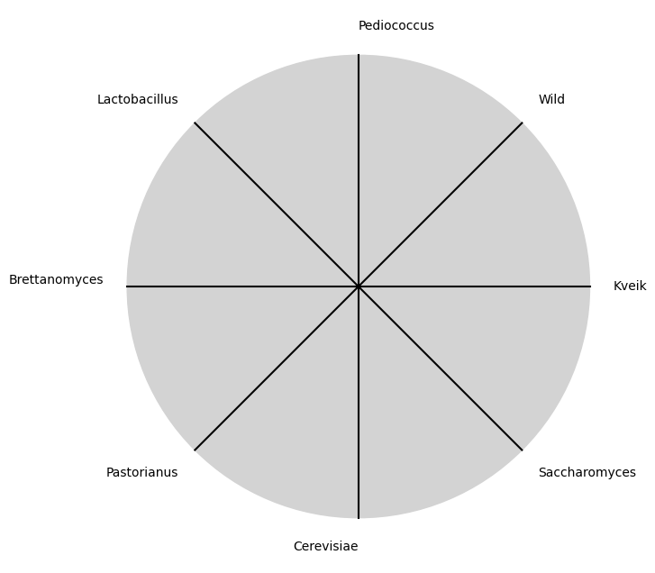

Yeasts#
Some breweries use 100% Brettanomyces for the fermentation of some of their beers, and omit Saccharomyces from the recipe
1. f(t)
\
2. S(t) -> 4. y:h'(t)=0;t(X'X)X'Y -> 5. b -> 6. SV'
/
3. h(t)
Allegory#
ii: \(\mu\) Yeast#
Gueuze, Iambic, Saison
Oud Bruin, Flanders Red Ale
Orval
Show code cell source
import matplotlib.pyplot as plt
import numpy as np
# Clock settings; f(t) random disturbances making "paradise lost"
clock_face_radius = 1.0
number_of_ticks = 8
tick_labels = [
"Saccharomyces", "Cerevisiae", "Pastorianus", "Brettanomyces", "Lactobacillus",
"Pediococcus", "Wild", "Kveik", "Other"
]
# Calculate the angles for each tick (in radians)
angles = np.linspace(0, 2 * np.pi, number_of_ticks, endpoint=False)
# Inverting the order to make it counterclockwise
angles = angles[::-1]
# Create figure and axis
fig, ax = plt.subplots(figsize=(8, 8))
ax.set_xlim(-1.2, 1.2)
ax.set_ylim(-1.2, 1.2)
ax.set_aspect('equal')
# Draw the clock face
clock_face = plt.Circle((0, 0), clock_face_radius, color='lightgrey', fill=True)
ax.add_patch(clock_face)
# Draw the ticks and labels
for angle, label in zip(angles, tick_labels):
x = clock_face_radius * np.cos(angle)
y = clock_face_radius * np.sin(angle)
# Draw the tick
ax.plot([0, x], [0, y], color='black')
# Positioning the labels slightly outside the clock face
label_x = 1.1 * clock_face_radius * np.cos(angle)
label_y = 1.1 * clock_face_radius * np.sin(angle)
# Adjusting label alignment based on its position
ha = 'center'
va = 'center'
if np.cos(angle) > 0:
ha = 'left'
elif np.cos(angle) < 0:
ha = 'right'
if np.sin(angle) > 0:
va = 'bottom'
elif np.sin(angle) < 0:
va = 'top'
ax.text(label_x, label_y, label, horizontalalignment=ha, verticalalignment=va, fontsize=10)
# Remove axes
ax.axis('off')
# Show the plot
plt.show()
Show code cell output

V7: \(\sigma\) Temperature#
Determines sensory compounds & is a control-step in modern brewing (e.g. Brett is typically viewed as a contaminant)
i: \(\%\) Other#
Parameters \(\beta\): malt, yeast, hops, water, other (oustide
Reinheitsgebot)Combination of these parameters will give character